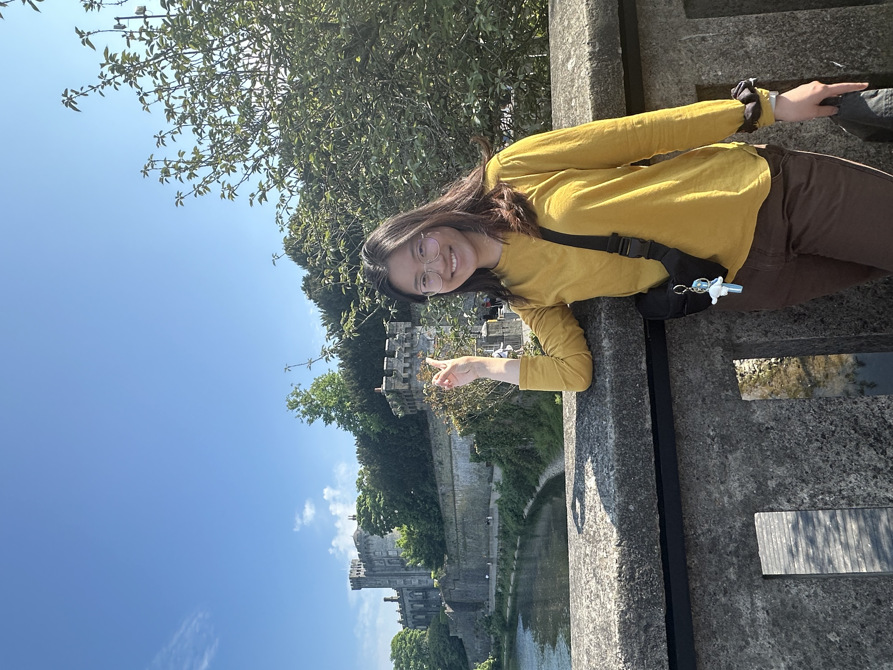

About Cliffs
We went to Kilkenny and Glandelaugh for a one day trip and the weather is great. For Kilkenny, we went to see the kilkenny castle, the market, and walked around the town. It's a very cute town perfect for some relaxing time with coffee shop, perfume shop, street singers around. Kilkenny Castle was the principal seat of the Butlers (the famouse chololate family), earls, marquesses and dukes of Ormond for almost 600 years built in the twelfth century. The castle even feels like a palace owned by the royal family with so many rooms inside. Under the powerful Butler family, Kilkenny grew into a thriving and vibrant city. Its lively atmosphere can still be felt today.
Learn about KilkennyGallery
